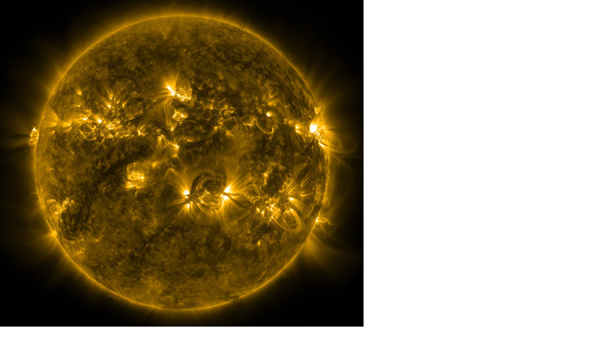

Summary
Skills
Projects
Research
Experience
Education
Summary
Physics B.S. candidate and ML-focused research assistant applying Gaussian
process regression and neural networks to turbulence simulations on HPC
systems. Data and analytics experience includes revenue modeling,
performance analysis, survey data pipelines, and operational decision support.
Strong communicator with leadership and cross-functional collaboration skills.
Skills
Technical
Python
Pandas
NumPy
Sci-kit Learn
SciPy
SQL
Jupyter
Git
C
LaTeX
Gaussian Processes
Neural Networks
Numerical Analysis
Linear Algebra
Matrix Algebra
HPC Workflows
Soft Skills
Communication
Team Leadership
Stakeholder Alignment
Creative Problem Solving
Strategic Planning
Conflict Resolution
Evidence-Based Decisions
Client Interaction
Projects
Gaussian processes · Neural networks · Feature extraction
Developed Gaussian process regression and neural network models for MHD turbulence data.
Extracted vorticity, Mach number statistics, and high-dimensional flow features.
Analyzed large simulation datasets on MSU’s HPC cluster.
Built revenue models segmented by provider/site to identify coverage gaps.
Used outputs to directly inform fiscal-year budgeting and staffing decisions.
Created multi-year performance analysis leading to >10% raise for a staff member.
Research Experience

Applied GPR and neural networks to turbulence and magnetohydrodynamic simulations.
Used numerical methods and linear algebra for feature extraction from high-dimensional data.
Ran simulation workflows on MSU’s HPC systems.
Professional Experience
Used analytics to support decision-making for budgets, staffing, and operations.
Created survey pipelines, encounter reporting, and client outcome analyses.
Top 10% performer; developed strong communication and client engagement skills.
Education
B.S. Physics — Michigan State University
Minor in Computational Math, Science, and Engineering (CMSE)
Expected 2025
Relevant coursework: Linear Algebra, Matrix Algebra, Numerical Analysis, Computational Physics
Associate of Science — Jackson College
Mathematics Transfer Program